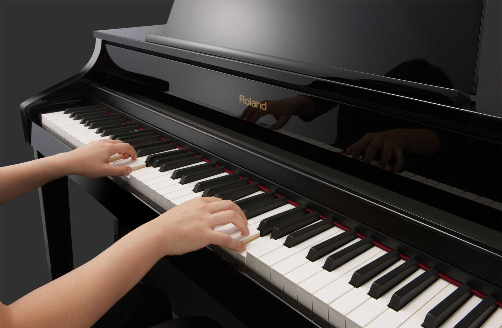
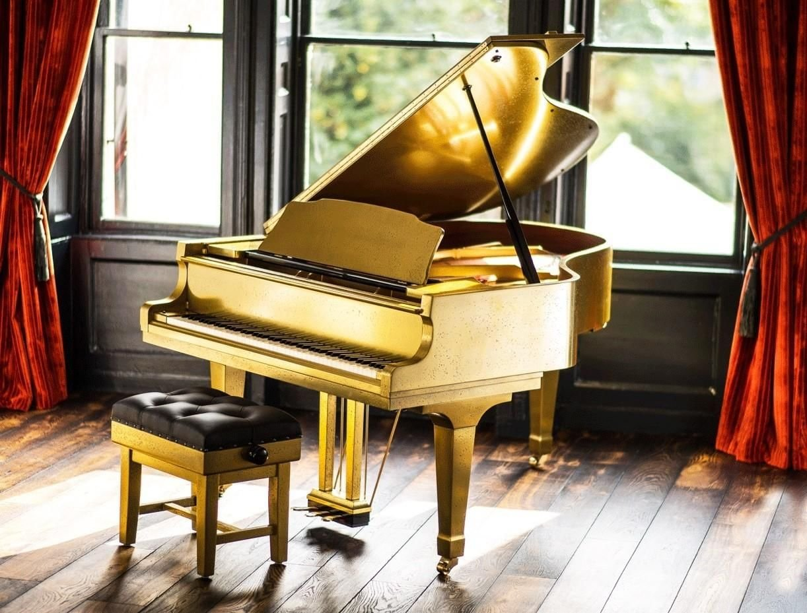
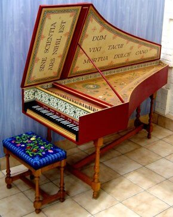
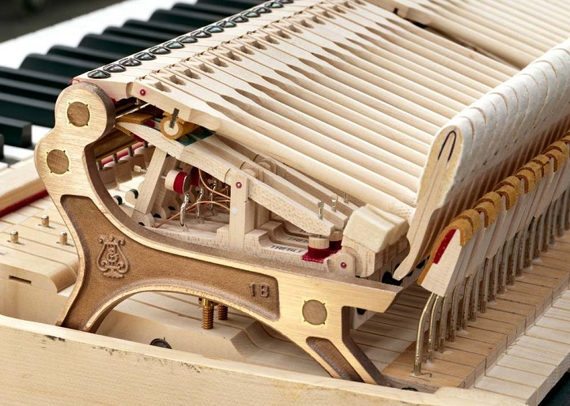
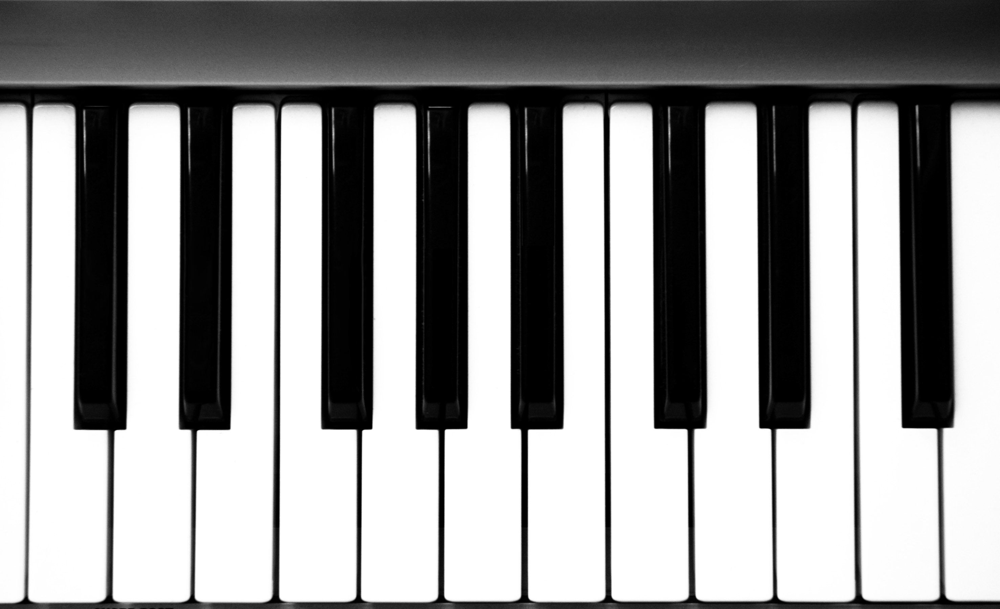
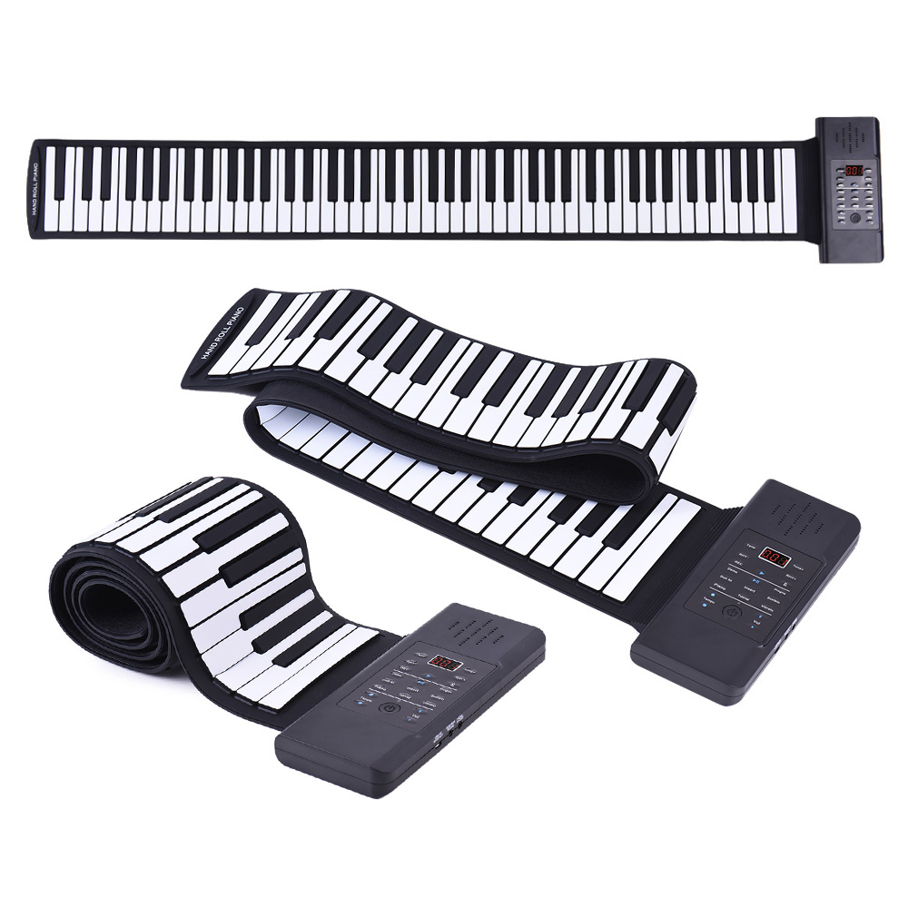

Поиск
Поиск
 Фортепиано является одним из самых популярных музыкальных инструментов. Это струнный ударно-клавишный музыкальный инструмент, название которого произошло от итальянских слов forte – громко, piano – тихо. Фортепиано имеет два основных типа инструментов: с горизонтальным расположением струн (рояль) и вертикальным (пианино).
В рояле струны, вся механика и дека (резонирующая поверхность) размещены горизонтально, поэтому он имеет весьма внушительные размеры, а по форме напоминает птичье крыло. Его важная особенность – открывающаяся крышка (когда она открыта, усиливается  мощность звука). Рояль – для концертных залов, так как имеет более насыщенное звучание. Слово «рояль» в переводе с французского означает - «королевский». Ни один дворцовый бал не обходился без использования этого инструмента. Пианино предназначено для домашнего музицирования или небольших по объёму помещений. Для него характерно вертикальное расположение механизмов, за счёт чего, оно имеет большую высоту, чем рояль, вытянутую форму и прислоняется вплотную к стене комнаты. Габариты пианино намного меньше, чем у рояля – средняя ширина достигает 1.5 м., а глубина – порядка 60 см.
Предшественниками фортепиано являлись клавесины и изобретённые позднее клавикорды. Клавесин был придуман в Италии в XV веке. Звук извлекался за счёт того, что при нажатии на клавишу поднимался стерженёк (толкачик), после чего плектр «защипывал» струну. Недостаток клавесина в том, что нельзя менять громкость, и музыка звучит недостаточно динамично. Клавикорд (в переводе с латыни – «клавиша и струна»). Широко использовался в XV-XVIII вв. Звук возникал за счёт удара тангента (штифт из металла в задней части клавиши) по струне. Громкость звука регулировалась силой нажатия на клавишу. Минусом клавикорда является быстро затихающий звук.
 Изобрёл фортепиано итальянский клавесинный мастер Бартоломео Кристофори (1655-1731), с 1698 г. работавший над созданием молоточкового механизма для клавесина (официальная дата – около 1709 г.). В 1711 г. механизм был подробно описан Сципионом Маффеи в венецианском журнале «Giornale dei letterati d’Italia». Инструмент был назван «gravicembalo col piano e forte» (клавесин с тихим и громким звуком) или пианофорте, а впоследствии закрепилось название фортепиано. Пианино — по-итальянски pianino переводится как «маленькое фортепиано». Американец Дж. Хокинс изобрел первое в мире пианино в 1800 году. В 1801 году похожую конструкцию, но уже с педалями, придумал М. Мюллер из Австралии. В России производство фортепиано связано с деятельностью мастеров Тишнера и Вирты в 1818-1820 годах.
Фортепиано по праву называют королем музыкальных инструментов. Причин этому много, но главная заключается в диапазоне инструмента. Фортепиано охватывает весь спектр звучания инструментов оркестра, от самой низкой ноты басового фагота и до верхней ноты флейты-пикколо.
 Рояль и пианино имеют общую схему, хотя расположены детали по-разному. На раму из чугуна при помощи колков натягиваются струны, которые пересекают дискантовый и басовый штеги (они усиливают струнные колебания), прикреплённые к деревянному щиту под струнами (резонансной деке); в нижнем регистре действует 1 струна, а в среднем и высоком – «хор» из 2-3 струн.
Когда пианист нажимает на клавишу, от струны отходит демпфер (глушитель), позволяя ей свободно звучать, после чего по нему бьёт молоточек. Так извлекается звук на фортепиано. Когда на инструменте не играют, струны (кроме крайних октав) прижимаются к демпферу.
На пианино обычно установлены две педали, а на рояль – три. При нажатии на первую педаль поднимаются все демпферы, и определённые струны звучат при отпущенных клавишах, а другие начинают вибрировать. Так удаётся добиться непрерывного звука и дополнительных обертонов. Левая педаль делает звук приглушённым и ослабляет его, используется редко. Третья педаль есть только на рояле, её задача – блокировать определённые демпферы, чтобы они оставались поднятыми до снятия педали. За счёт этого можно сохранять один аккорд, играя другие ноты.
 Все виды фортепиано имеют 88 клавиш, 52 из которых белые, а остальные 36 – чёрные. Стандартный диапазон этого музыкального инструмента – от ноты ля субконтроктавы до ноты до в пятой октаве. Пианино и рояль очень универсальны, и на них можно сыграть практически любую мелодию. Они подходят как для сольных произведений, так и для совместной работы с оркестром.
В настоящее время появились принципиально новые инструменты – электронные пианино, рояли, синтезаторы и даже гибкие пианино. Синтезаторы и цифровые фортепиано — компактные альтернативы большим акустическим инструментам. Цифровые модели неплохо звучат,  а их клавиши уже давно способны дарить практически те же ощущения от игры, что и клавиши акустических аналогов. Гибкое пианино, конечно, не сравнится со своими акустическими и цифровыми собратьями, так как у него нет того ощущения прикосновения к клавишам и глубины звукоизвлечения. Но с его помощью можно учить сольфеджио и главным достоинством гибкого пианино является его мобильность, которая позволяет брать пианино туда, где недоступно традиционное фортепиано (на дачу, в деревню, в поездку на море).
Фортепиано – удивительный по своим безграничным возможностям инструмент. Он используется для многих задач в музыке. На нём исполняют сольные произведения, играют концерты для фортепиано с оркестром. Часто пианист выступает в роли аккомпаниатора (концертмейстера) другим инструментам таким как скрипка, балалайка, домра, флейта и для сопровождения пения. Игра на фортепиано – занятие, требующее многолетних тренировок, внимания и самоотдачи.
.